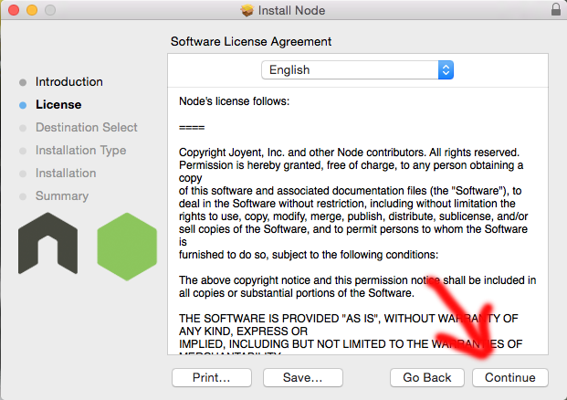

Installing Node.js
We will use the easiest way to install Node.js on your local machine.
1) You will want to go to this website and click
2) Now you will look in your downloads folder for this:
Note that the version may change depending on when you're reading this tutorial
3) Double click the icon you will come to this page.
From here you will want to click continue.
4) Go ahead and read through the licensing agreement and then click continue.

5) Now you are ready to install. Go ahead and click "install."
6) After installing you will see the bellow screen. We are almost done, but there are a few more steps to make sure it's installed properly. Hope you enjoy command line :)
How to Verify Installation
Please follow this link to learn how to verify node.js installation.